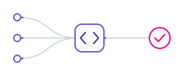
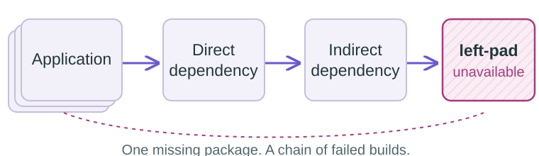
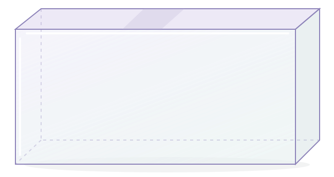

Environments & Docker
HEC Lausanne · Data and Code Management · Week 10

Same World Bank report. A more portable way to run it.
“It worked on my laptop.” What would a colleague need?
Say: “Imagine you clone the very same GitHub repository as a colleague. The code is identical, but the program runs on your computer and fails on theirs. What could the colleague be missing?” Let students suggest versions of Python, installed packages, data files or a different operating system. “Today we’ll learn how to describe more of the environment needed to execute our work.”
Ask: “If I give you just report.py, have I given you everything required to reproduce its result?” Expect no.
Remarks: This continues last week’s handover and testing discussion. Keep one frozen World Bank population report throughout. There is no need for a terminal demonstration yet.
Timing: 2 minutes, including two or three student responses.
Today: reproduce the execution
Block 1 · 45 min — Python → venv → pip → requirements.txt
Block 2 · 45 min — Dockerfile → image → container → verify
You will: diagnose a dependency, recreate Python packages, build an image, and repair a missing file.
Pair with a working neighbour if setup blocks you. Keep the report code unchanged.
Say: “First we’ll use Python’s own tools to install project dependencies in an isolated environment. After the break we’ll use Docker to package the program’s runtime more completely. You’ll diagnose a genuine-looking failure, install what is missing, build a container image, and repair a missing data file.”
Ask: “What would count as success: a report that opens, or a report that also passes its checks?” Seek both execution and verification.
Remarks: Tell students to work in pairs if setup blocks them. The browser exercises have their own Python runtime; they do not use the laptop’s Python or Docker. Do not turn this into a Docker installation workshop.
Timing: 2 minutes. Take the scheduled break between the two blocks.
Same code is only one ingredient
Alice World Bank report
CHE 1.314%
DEU 0.275%
FRA 0.262%
Bob same Git repository · same frozen data
ModuleNotFoundError:
No module named 'pandas'
Both students have exactly the same code and data.What could explain the different results?
Their execution environments differ: Bob’s executing Python is missing pandas . Check that interpreter and install its dependencies.
Say: “Here are Alice and Bob. Both downloaded the same repository and the same frozen data. Alice sees three population-growth numbers. Bob sees ModuleNotFoundError: No module named 'pandas'. What is different?” Pause before revealing the explanation. “Bob’s executing Python cannot find pandas. That is an environment problem, not evidence that the Git repository or data are wrong.”
Ask: “Would changing the percentage formula repair this error?” No: the program fails before that calculation.
Remarks: The Alice/Bob artwork is illustrative, not a real terminal capture. Read the exception as one message spanning two lines. Point ahead to identifying the interpreter actually running the file.
Timing: 2 minutes, including roughly 45 seconds of predictions.
Which Python is running?
Goal Identify the interpreter executing your code.
Where This browser slide. No local Python or Docker execution.
Action Predict → Run → add the implementation line → Run again.
Expected Browser runtime details, not your laptop’s Python path.
Hint / fallback Add print(platform.python_implementation()). Expect CPython.
Say: “We can execute Python right here in the slides, but whose Python is it? Before clicking Run, predict whether this shows your laptop’s operating system and Python path.” Run the browser cell and point to sys.version, sys.platform and sys.executable. “This is Pyodide, Python running in the browser through WebAssembly. Its paths do not describe the Python installed on your laptop.”
Do, in the browser cell: Add and run:
print (platform.python_implementation())Remarks: Expect CPython as the implementation; the platform is typically emscripten. If the interactive runtime does not load, show the static slide’s expected output. Never try Docker commands in this cell.
Timing: 3 minutes. Allow a prediction before execution.
Your terminal has its own Python
python3 -c "import sys; print(sys.executable)" python3 -m pip --version Windows PowerShell: use py -3.14 in place of python3 here.
Read both paths. Are Python and pip associated with the same installation?
python -m pip runs pip through that Python. A browser path says nothing about your laptop’s packages.
Say: “Let’s compare the browser’s Python with the Python our terminal will use. On my Fedora laptop I can ask Python exactly where its executable lives. I can also ask that same Python which pip it will run.”
Do, in a local terminal:
python3 -c "import sys; print(sys.executable)" python3 -m pip --version Ask: “Why write python3 -m pip instead of an unqualified pip?” The -m form selects pip through the named interpreter. On Windows PowerShell, substitute py -3.14 for python3.
Remarks: A command named python3 does not itself guarantee a specific minor version. These commands inspect the environment without changing it. Do not confuse the browser’s executable path with a laptop path.
Timing: 3 minutes, including the live terminal comparison.
A · Diagnose the missing dependency
Goal Explain the failure before installing anything.
Where Terminal, inside the extracted student-pack folder.
Action — macOS/Linux
python3 -m venv .venv.venv/bin/python report.py pipeline.pyWindows PowerShell
- 3.14 - m venv . venv . \. venv \Scripts\python. exe report. py pipeline. py Expected Fresh environment: No module named 'pandas'.
If blocked Use that supplied error; identify the interpreter and missing package with a partner.
Say: “For this activity, failure is the expected result. Create a fresh virtual environment in the extracted student pack, then try the report using its Python. Do not install anything yet. I want you to tell me what failed and why.”
Do, macOS/Linux:
python3 -m venv .venv.venv/bin/python report.py pipeline.pyDo, Windows PowerShell:
- 3.14 - m venv . venv . \. venv \Scripts\python. exe report. py pipeline. py Expected: A new environment cannot import pandas, giving ModuleNotFoundError. Ask students to locate the interpreter used, not to edit the Python source.
Remarks: If someone reused an environment where pandas is already installed, use the supplied failure message rather than deleting their files. Two minutes to try, one to discuss with a neighbour, one to correct. Installing globally is outside this activity.
Timing: 4 minutes.
What a virtual environment isolates
Installed Python → .venv → report.py
venv creates a project-specific Python environment.
pip installs packages into the Python you select.
A venv isolates Python packages. It does not package the operating system or automatically include your data.
Say: “A .venv gives a project its own Python package installation area. Imagine one project that needs one pandas version and another that needs a different version. Each environment can hold the version its project requires. You still start from an installed Python, and the operating system stays the same.”
Ask: “If I send you my .venv folder, is that our reproducibility strategy?” No. We share the recipe and recreate the environment on each machine.
Remarks: On Linux the environment’s Python executable often links to the base interpreter; on other systems it can be copied. Installed third-party packages live separately in .venv. The virtual environment does not automatically include project data. No live demo.
Timing: 2 minutes.
A short recipe: requirements.txt
pandas==2.3.3
numpy==2.3.5
python-dateutil==2.9.0.post0
pytz==2025.2
tzdata==2025.2
six==1.17.0pandas is used by the report; the other lines pin its dependencies.
Share this recipe, the Python version, code and data. Recreate .venv on each machine. Package pins alone do not fix the operating system.
Say: “Here is the list of package versions that our report expects. The first line says that pandas must be version 2.3.3. The other lines pin the associated dependencies, including NumPy. We can share this small text file through GitHub and use it to install the packages in a fresh environment.”
Ask: “Does this file also install Python, copy our JSON data, or select the operating system?” No.
Remarks: These versions were tested for this exercise; students should not update them during class. Distinguish a version pin from a preserved package artifact: installation may still require a network download. Do not run pip freeze on the instructor’s global environment.
Timing: 2 minutes. The next slide illustrates the availability problem.
When a tiny dependency disappeared
22 MARCH 2016 JavaScript / npm · the left-pad incident

273 packages unpublished
≈ 2.5 hours of disruption
Many thousands of projects affected.
How could a project suddenly stop building
An unchanged dependency chain can lead to a package that is no longer downloadable .
Exact versions: guaranteed rebuild?
Pins identify versions.
Already-built Docker image: affected?
With packages included and no runtime fetch, it can keep running. A clean rebuild can still fail.
JavaScript incident; the dependency-availability problem also applies to Python.
Source:
npm postmortem, 23 March 2016 · chain shown schematically
Say: “This is a real case from JavaScript in March 2016. A tiny package called left-pad added characters at the start of a string. For example, it could turn 42 into 00042 when asked for five characters. The developer unpublished 273 npm packages, and thousands of projects were disrupted even though their own code had not changed.”
Ask and reveal: “Would pinning the exact version guarantee a successful fresh build?” No: a pin names a version but cannot guarantee it remains downloadable. “Would a previously built image containing the package necessarily stop running?” No: if it has everything it needs and makes no new fetch, it may keep running while a clean rebuild fails.
Remarks: The diagram is schematic, not a historical project dependency map. This was an npm incident, but package availability matters for Python too. Avoid claiming Docker makes builds permanently reproducible or secure. Source is the npm postmortem already linked on the slide.
Timing: 3 minutes. Reveal answers after predictions.
Select the environment once
macOS / Linux
source .venv/bin/activate
Windows PowerShell
. \. venv \Scripts\Activate. ps1
Both platforms, after activation:
python -c "import sys; print(sys.executable)" Expected: a path inside .venv.
If activation is blocked, use .venv/bin/python or .\.venv\Scripts\python.exe instead of python in the next activity. No policy changes needed.
Say: “Rather than typing a long Python path for every command, we can activate the environment in the current terminal. Activation adjusts which python command the shell finds. It does not change every terminal, notebook, or VS Code session on your computer.”
Do:
source .venv/bin/activatepython -c "import sys; print(sys.executable)" Windows PowerShell:
. \. venv \Scripts\Activate. ps1 - c "import sys; print(sys.executable)" Expected: The executable path points inside .venv. Explain that deactivate leaves the activated environment.
Remarks: If PowerShell blocks activation, use .\.venv\Scripts\python.exe explicitly rather than changing security policy. On macOS/Linux use .venv/bin/python as the equivalent fallback.
Timing: 3 minutes, with a live check of sys.executable.
B · Install and run the report
Goal Recreate the packages and run unchanged reporting code.
Where Same terminal and pack folder; .venv selected.
Action — both platforms after activation
python -m pip install -r requirements.txtpython report.py pipeline.pypython checks.py pipeline.pypython my-check.py pipeline.pyExpected CHE 1.314% , DEU 0.275% , FRA 0.262% ; BASIC: 14/14 and PRECISION PASS.
If blocked Use the explicit .venv Python path from the previous slide. If installation fails, pair and compare expected-report.txt.
Say: “We have diagnosed the missing package. Now let’s install the versions listed in requirements.txt into our project environment, run the unchanged report, and check its behavior. A successful import alone isn’t enough.”
Do, inside the student pack with .venv selected:
python -m pip install -r requirements.txtpython report.py pipeline.pypython checks.py pipeline.pypython my-check.py pipeline.pyExpected: Three rows for CHE, DEU and FRA; growth values displayed as 1.314%, 0.275% and 0.262%; BASIC: 14/14; PRECISION PASS.
Ask: “What did the installation fix?” The missing packages for the selected interpreter; the Python source and frozen data remained unchanged.
Remarks: Give students four minutes to run, two to compare with a partner, one for a correction. Installation needs access to the packages or a prepared cache. If blocked, use the explicit interpreter path or supplied expected output. Do not weaken checks to get a green result.
Timing: 7 minutes.
Read the report as evidence
CHE
8,888,822
9,005,582
116,760
1.314%
DEU
83,287,273
83,516,593
229,320
0.275%
FRA
68,372,286
68,551,653
179,367
0.262%
Persons , not thousands. Growth is displayed to three decimals.
Matching display values is useful evidence. It cannot prove full-precision calculations.
Say: “These are the actual values we expect from the saved World Bank snapshot. Switzerland increased by 116,760 people, giving about 1.314 percent growth. The other two rows provide an independent visual comparison with our terminal output.”
Ask: “If our terminal displays 1.314 percent, does that prove the underlying calculation kept all its digits?” No. Output formatting can hide early rounding.
Remarks: All population figures are persons, not thousands. Display rounds growth to three decimal places; the calculation contract keeps full precision. Do not launch another demo here. The next example shows why fixed inputs matter.
Timing: 2 minutes.
Frozen data, reproducible input
Goal Keep the report’s input fixed.
Where A packaged snapshot in the browser’s virtual filesystem.
Action Run for CHE; change it to FRA; run again.
Expected CHE: 9,005,582 . FRA: 68,551,653 (2024, persons).
Hint / fallback Change only the country code. These saved values need no live API.
Say: “Now we’re back in browser Python, reading the saved JSON file that accompanies the lecture. We’re not calling the World Bank API again. A live endpoint could return revised data tomorrow, so saving the actual input matters.”
Do, in the browser cell: Run with country = "CHE", then change only that line to country = "FRA" and run again.
= "CHE" # then change to "FRA" Expected: The 2024 value is 9,005,582 for CHE and 68,551,653 for FRA.
Remarks: The browser downloads a packaged copy of the frozen file to its virtual filesystem; it does not fetch current API data. Remind students that a perfectly recreated environment cannot reproduce a result if the input silently changes. Use Start Over to restore the initial cell.
Timing: 2 minutes.
Reproducible does not mean correct
Goal Detect a repeatable calculation defect.
Where This browser slide; a small independent example.
Action Predict → Run → remove early rounding → Run again.
Expected First: AssertionError. Corrected: PASS.
Hint / fallback Return the unrounded number. Use Show Hint, Show Solution or Start Over.
Keep all digits; round only for display.
Replace return round(rate, 3) with return rate.
Say: “Imagine we can reproduce the same result every time, but the calculation itself is defective. Here the function rounds a growth percentage before returning it. Predict what the assertion will say.” Run the cell. “For a change from 600 to 700, the exact percentage is 100/6, or 16.6666 repeating. Rounding it to 16.667 before returning the value is outside the agreed contract.”
Do, in the browser cell: Change only the return statement:
Expected: Before the edit, AssertionError: rounded too early; afterward, PASS.
Remarks: Keep the independent assertion and absolute tolerance of 1e-9 unchanged. The browser’s faulty starter is intentionally separate from the correctly implemented student-pack pipeline. Reset restores the original fault, so do not call reset a repaired result.
Timing: 3 minutes, with prediction, failed execution and correction.
Keep the independent check
python my-check.py pipeline.pyPRECISION CHE: expected 33.333333333333;
actual 33.333333333333
PRECISION PASS (absolute tolerance 1e-9 percentage points)The real output puts expected and actual on one line.
Re-run the same check after changing the environment. Never weaken an assertion to make an image pass.
Say: “The student pack already contains an independent precision check from last week. It constructs a population change from 300 to 400. We know the correct percentage in advance: one hundred divided by three. The test compares that independently obtained answer with the pipeline’s result.”
Code reminder:
python my-check.py pipeline.pyExpected: The expected and actual values agree to an absolute tolerance of 1e-9 percentage points, followed by PRECISION PASS.
Ask: “Why shouldn’t a test call the function under test to calculate its expected answer?” It could repeat the same error. “Why rerun after changing the environment?” Dependencies might affect execution, so acceptance evidence must match the environment we actually use.
Remarks: The browser’s 600→700 example and the pack’s 300→400 fixture differ deliberately. This check was already run in Activity B; there is no need for another full live demo.
Timing: 3 minutes.
Checkpoint before the break
Tell your neighbour:
Which Python did you run?
What did the requirements file recreate?
What still depends on your laptop?
We can recreate Python packages. Python itself, system libraries and file inclusion still need attention. Next: package an execution environment with Docker.
Say: “Before we leave Python environments, explain three things to your neighbour: Which Python did you run? What did requirements.txt recreate? What still depends on your laptop?” Give pairs about a minute, then invite answers.
Expected: We used the project’s .venv interpreter; the requirements file installed pinned Python packages; the installed base Python, operating-system libraries and inclusion of the necessary files still matter. The browser Python used earlier is separate.
Remarks: “After the break, we’ll package more of that runtime using Docker.” No demonstration. Take a ten-minute break, outside the 90 minutes of teaching.
Timing: 2 minutes. Block 1 ends at 45 minutes.
Docker adds a packaged runtime
Dockerfile → build → Image → run → Container
Inside our image: Python + packages + report code + frozen data .
Docker must be installed and started on the host.
Pair or analyse supplied outputs if Docker cannot run today.
Say: “Welcome back. A virtual environment solved our Python package problem, but it still depended on Python and other components on the laptop. Alice uses Windows, Bob uses macOS, and I use Fedora. Docker gives us a way to prepare an image containing Python, the packages, our scripts and the frozen data, then run that image.”
Walk through the diagram: “The Dockerfile is the recipe. Building creates an image. Running the image creates a container in which our report executes.”
Ask: “Does that mean Docker can work with nothing installed on the host?” No. The Docker engine must be installed and running.
Remarks: Linux containers share a Linux kernel; Docker Desktop on macOS and Windows normally supplies a Linux VM for Linux containers. Keep that clarification short. No live demo yet.
Timing: 2 minutes.
Three words, three different things
Dockerfile
Text instructions
Read or edit
Image
Built environment, tagged dcm-w10
Build
Container
One execution from the image
Run
Editing a Dockerfile does not update an existing image. Rebuild, then run the new image.
Say: “Let’s be precise. The Dockerfile is just text instructions. The image is the environment we built from those instructions, tagged dcm-w10 in this example. A container is one execution created from an image. We can run several containers from the same image.”
Ask: “Suppose I edit the Dockerfile. Does an image I built yesterday automatically change?” Wait for no, then reveal: “I must build a new image before I can run the new instructions.”
Remarks: The recipe/prepared meal/serving analogy may help for ten seconds, but return to the technical distinction. A stopped container is not the editable project directory, and today’s workflow uses neither image registries nor bind mounts.
Timing: 3 minutes. No terminal demo.
Read the recipe: prepare Python
FROM python:3.14-slimWORKDIR /appCOPY requirements.txt .RUN python -m pip install --no-cache-dir -r requirements.txtFROM selects a base. WORKDIR sets the working folder.
COPY brings a file from the build context into the image.
RUN executes during the build , installing the packages.
Say: “We’ll now read the Dockerfile rather than memorize it. FROM python:3.14-slim chooses a Python 3.14 base image. WORKDIR /app sets the working directory inside the image. COPY requirements.txt . copies the package recipe into /app. RUN executes when we build and installs the pinned packages there.”
Point to the code:
FROM python:3.14-slimWORKDIR /appCOPY requirements.txt .RUN python -m pip install --no-cache-dir -r requirements.txtAsk: “Where does the final dot in the COPY line put the file?” In /app, because WORKDIR already selected that directory.
Remarks: A tag such as python:3.14-slim can change as maintainers update it; a digest would identify the exact base image. Do not claim the build is bitwise immutable. No terminal demo.
Timing: 3 minutes.
Read the recipe: include the project
COPY *.py .COPY data/ data/CMD ["python" , "report.py" , "pipeline.py" ]COPY data/ data/ includes the frozen data and check fixtures.
CMD supplies the default command when a container runs .
RUN prepares the image. CMD starts the report later. Building the image does not execute this report.
Say: “After preparing Python and its packages, we copy the project code. COPY *.py . brings in our Python scripts. COPY data/ data/ adds the saved World Bank JSON, its provenance and the check fixtures. Finally, CMD gives the command that a container will run by default.”
Point to the code:
COPY *.py .COPY data/ data/CMD ["python" , "report.py" , "pipeline.py" ]Ask: “What’s the difference between RUN on the preceding slide and CMD here?” RUN is executed during image construction. CMD runs later when we start a container, unless the run command overrides it.
Remarks: Ask where /app/data/raw/population-2023-2024.json comes from. The report uses the frozen file and makes no live API request. Do not yet disclose the broken recipe used in Activity D.
Timing: 3 minutes.
The dot means this folder
docker build -t dcm-w10 .Run from the extracted student-pack folder.
The final . is the build context: files Docker may copy.
.dockerignore excludes .venv, caches and Git metadata.
Our data directory is deliberately included.
Say: “This last dot is surprisingly important. In docker build -t dcm-w10 ., it means ‘use this current directory as the build context’. Docker can copy files from that context into the image. So run the command from the extracted student-pack folder, where you can see the Dockerfile and the data directory.”
Do, if useful, in a terminal before building:
pwd ls Dockerfilels dataRemarks: On Windows PowerShell use Get-Location and Get-ChildItem if needed. .dockerignore keeps .venv, caches and Git metadata out of the build context, but deliberately allows data/. Do not introduce bind mounts, which could hide the missing-data defect in the later exercise.
Timing: 2 minutes. A brief terminal folder check is optional.
Build once; reuse the dependency layer
Base Python → Install requirements → Copy project
Code or data edits can reuse the earlier package-install layer.
Before class: build the complete reference image, not only docker pull.
Pulling Python caches the base. It does not install pandas. A successful full build prepares the actual dependency layer.
Say: “Building the image follows the recipe in order. First Docker obtains the base Python image, then installs the requirements, then copies our code and data. Docker can reuse earlier build layers. For example, changing a Python script normally doesn’t require reinstalling pandas if the requirements layer has not changed.”
Ask: “If I only run docker pull python:3.14-slim, have I prepared our report’s dependencies?” No. The base image doesn’t contain the packages installed by our Dockerfile’s RUN command.
Remarks: Before class, the instructor should run a complete build, not just pull the base. A first build can require internet and take several minutes. Caches are local to a Docker engine and can vary across platforms; do not promise the same cache to every student.
Timing: 2 minutes. No class-wide rebuild demonstration yet.
C · Build → run → verify
Goal Execute and check the report inside an image.
Where Pack-folder terminal, Docker engine running. Both platforms.
Action — supplied complete Dockerfile
docker build -t dcm-w10 .docker run --rm dcm-w10docker run --rm dcm-w10 python checks.py pipeline.pydocker run --rm dcm-w10 python my-check.py pipeline.pyExpected Three report rows; BASIC: 14/14; PRECISION PASS.
If blocked Pair with a ready machine; analyse supplied-output-analysis.md. Record whether you executed or analysed.
Say: “Time to use Docker. In the extracted student pack, first build the image. Then run the report. After that, run both the basic checks and the independent precision check inside that image. The last two steps matter because a plausible report alone is not enough evidence.”
Do, student terminal with Docker engine running:
docker build -t dcm-w10 .docker run --rm dcm-w10docker run --rm dcm-w10 python checks.py pipeline.pydocker run --rm dcm-w10 python my-check.py pipeline.pyExpected: Three population-growth rows, BASIC: 14/14, then PRECISION PASS.
Ask: “Does --rm delete the image?” No. It removes the stopped container after the command exits, so the image can be reused.
Remarks: Four minutes hands-on, two minutes to compare, one minute to correct. Do not troubleshoot one laptop’s Docker installation for longer than a minute; use a partner or supplied-output-analysis.md, recording which evidence was observed rather than executed. No local virtual environment is needed to run these container commands.
Timing: 7 minutes, high priority.
What does this command execute?
docker run --rm dcm-w10 python checks.py pipeline.pyThe command after the tag replaces the image’s default CMD.
It runs the supplied check inside the container , against the included pipeline and fixtures.
A local python checks.py checks local files. It does not verify the contents of your image.
Say: “Look closely at this command. dcm-w10 names the image. Everything after that tag replaces the default command in the Dockerfile. So instead of running the report, Docker starts Python inside the container and executes checks.py against the pipeline bundled in the image.”
Code reminder:
docker run --rm dcm-w10 python checks.py pipeline.pyAsk: “If I run python checks.py pipeline.py in my laptop terminal, have I tested what is inside the image?” No. That tests local files using local Python; the container command checks the packaged files.
Remarks: Distinguish image tag, Python executable, script and argument. The override skips the default CMD. This distinction will matter when verifying the repaired tag in Activity D.
Timing: 2 minutes.
A green build is not a green report

INSIDE THE IMAGE
Python included
pandas included
pipeline.pyincluded
report.pyincluded
population-2023-2024.jsonMISSING
docker buildSUCCESS Instructions completed
docker runFileNotFoundError The report needs the frozen JSON
How can the image build successfully
The build never read that input. The report tries to open it at run time . Inspect the recipe next.
Illustrated expected outcomes · not an execution log
Say: “Here’s a small trap. Docker successfully builds an image containing Python, pandas, and our scripts, but the saved population JSON is missing. Can the build still succeed? Yes, because installing packages and copying scripts never required opening that data file. What happens when the report finally runs?” Wait for FileNotFoundError, then reveal the explanation.
Ask: “Is this another pandas problem?” No. This image already includes pandas; the missing item is input data.
Remarks: The figure shows expected behavior, not a captured Docker log. Show the outcome first and hold back the actual missing line until students inspect the next slide. The execution phase is when the report tries to open the JSON.
Timing: 2 minutes, including a prediction.
Inspect the defective recipe
FROM python:3.14-slimWORKDIR /appCOPY requirements.txt .RUN python -m pip install --no-cache-dir -r requirements.txtCOPY *.py .# Something essential is missing here. CMD ["python" , "report.py" , "pipeline.py" ]Which one line would you add? Do not change Python or tests.
Say: “Now inspect Dockerfile.broken. It selects Python, installs requirements, and copies the .py files. But we know the report expects a JSON file under data/raw/. Which one line would you add before CMD?” Let pairs look at the actual file and discuss rather than supplying the answer immediately.
Ask: “Could changing CMD, installing another Python package, or fetching live World Bank data repair the packaging contract?” No. The frozen input belongs in the image.
Expected: Students identify COPY data/ data/ but perform the actual repair in the next activity.
Remarks: Avoid projecting the complete reference Dockerfile or the repaired image before students attempt the diagnosis. No code edits on this slide; students will edit in Activity D.
Timing: 2 minutes.
D · Repair the missing frozen data
Goal Prove that the repaired image contains usable inputs.
Where Pack-folder terminal and editor; both platforms.
Action Build and run the deliberately broken recipe:
docker build -f Dockerfile.broken -t dcm-w10-broken .docker run --rm dcm-w10-brokenAdd COPY data/ data/CMD in Dockerfile.broken.
docker build -f Dockerfile.broken -t dcm-w10-fixed .docker run --rm dcm-w10-fixeddocker run --rm dcm-w10-fixed python checks.py pipeline.pydocker run --rm dcm-w10-fixed python my-check.py pipeline.pyExpected Broken: missing-data FileNotFoundError; fixed: report, 14/14, PRECISION PASS.
If blocked Compare Dockerfile.reference; pair or explain supplied outputs.
Say: “First prove the defect using the deliberately broken recipe. Building should succeed, and running should fail because the image has no JSON. Then add the smallest packaging fix, rebuild under a new tag, and run the report and both checks inside that repaired image.”
Do, before editing Dockerfile.broken:
docker build -f Dockerfile.broken -t dcm-w10-broken .docker run --rm dcm-w10-brokenExpected: A runtime FileNotFoundError for /app/data/raw/population-2023-2024.json. Add this line before CMD:
Do, after editing:
docker build -f Dockerfile.broken -t dcm-w10-fixed .docker run --rm dcm-w10-fixeddocker run --rm dcm-w10-fixed python checks.py pipeline.pydocker run --rm dcm-w10-fixed python my-check.py pipeline.pyExpected: Three report rows, BASIC: 14/14, PRECISION PASS.
Remarks: Two minutes to observe the failure, one to repair, two to verify, one to explain. Keep broken and fixed tags distinct. An unrelated registry or network error during build is not evidence of the intended missing-data defect. Do not use a local test or bind mount to substitute for checks on the repaired image.
Timing: 6 minutes, high priority.
What changed in the repair?
INSIDE THE IMAGE
Python included
pandas included
pipeline.pyincluded
report.pyincluded
population-2023-2024.jsonincluded
THE PACKAGING REPAIR
COPY data/ data/
Rebuild: the new image now contains the frozen JSON and its provenance.
Verify the repaired image · same commands as Activity D
docker run --rm dcm-w10-fixeddocker run --rm dcm-w10-fixed python checks.py pipeline.pydocker run --rm dcm-w10-fixed python my-check.py pipeline.py
Build success Instructions completed
≠
Successful execution The report ran
≠
Verified behavior Independent checks passed
Say: “We added one COPY instruction and rebuilt the image. Python, our code, and the checks stayed the same. The repaired image now contains the frozen JSON and provenance, so the program can open its input.” Reveal the packaging fix after students explain it.
Ask: “What did the green build prove? What did running the report prove? What did both checks add?”
Expected: Build success means Docker completed the recipe; execution success means this report ran; independent verification supports the particular behavior specified in the checks. Reveal the three-way distinction only after hearing student answers.
Remarks: Refer to the same three dcm-w10-fixed run commands shown on the slide. The illustration is not an execution log. Tests have limited scope; they do not prove every imaginable input or environment. Do not skip this explanation after the activity.
Timing: 2 minutes.
Ask AI for a bounded packaging edit
“Given this Dockerfile and the error path, propose the smallest packaging fix. Keep the reporting code, frozen data and assertions unchanged. Explain which files the new image will contain.”
You own the evidence: inspect the diff, rebuild, run the report, then run both supplied checks inside that image.
A plausible Dockerfile is a proposal. Executed checks are evidence; even those checks have a stated scope.
Say: “Suppose you ask an AI coding assistant to repair this. A useful prompt describes the specific error path and sets boundaries: make the smallest Dockerfile change, preserve reporting code and data, and explain which files will be included. The assistant can propose an edit, but we still decide whether to accept it.”
Ask: “What if the assistant suggests deleting the failing test or downloading fresh data?” Reject that proposal: it changes the behavior or input contract rather than fixing packaging.
Do, conceptually: Inspect the diff, rebuild, run the report, and run both checks inside the repaired image. No live account or AI request required.
Remarks: Connect this to Week 9’s supervised refactor: a plausible explanation is not independent acceptance evidence. Mention that even passing checks verify only their stated scope.
Timing: 3 minutes.
Choose the next diagnostic action
No module named pandas locallyCheck Python path; install requirements there
Cannot connect to Docker daemon
Start Docker; pair if unavailable
Image builds; JSON missing at run
Inspect COPY data/ data/; rebuild
Report looks right; precision fails
Inspect calculation contract; keep assertion
Today’s priority: complete the evidence sequence, not individual installation repair.
Say: “Let’s finish with four situations. For each, tell me the very next action you would take. If local Python says pandas is missing, what do you check? If Docker cannot connect to its daemon, what do you check? If an image builds but the JSON is missing, where do you look? If the report looks right but the precision check fails, what do you inspect?”
Expected: Check the Python executable and install requirements into it; start the Docker engine or pair; inspect COPY data/ data/ and rebuild; inspect the calculation contract without weakening the assertion.
Remarks: Use one student response per row and keep answers short. If someone used the supplied-output fallback, accept the diagnosis but distinguish analysis from their own successful execution. Avoid troubleshooting individual installations here.
Timing: 2 minutes, rapid retrieval.
Exit: reproduce, then verify
Explain to a colleague:
How do you recreate this project’s Python packages?
How does a Dockerfile become an executing report?
Why can an image build successfully and still fail?
What evidence verifies your repaired image?
venv → pip → requirements.txt · build → run → verify
Keep code, frozen input, provenance and independent checks together.
Say: “Before leaving, explain this workflow to someone who missed class. How would they recreate the Python packages? How does a Dockerfile lead to a running report? Why could a successful build still lead to a runtime failure? And what evidence would convince you that the repaired image works for this case?”
Expected: Create/select a .venv and install requirements.txt; build the Docker image and run a container; missing data can remain unnoticed until runtime; verify the repaired tag by running the report, the 14 basic checks and the independent precision check inside it.
Close: “A Git repository gives your colleague the code and history. A dependency recipe or Dockerfile helps recreate execution. Keep frozen inputs, provenance and independent checks alongside both.”
Remarks: Two minutes for pairs, one to collect responses, one to close. If behind schedule, shorten the pair exchange, never the repaired-image verification.
Timing: 4 minutes. Block 2 ends at 45 minutes.